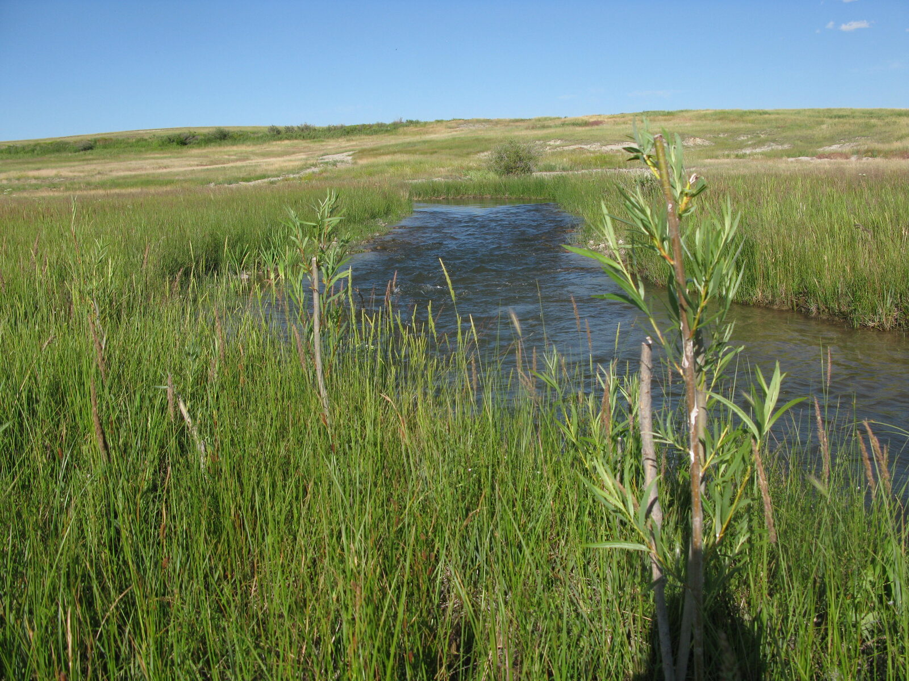
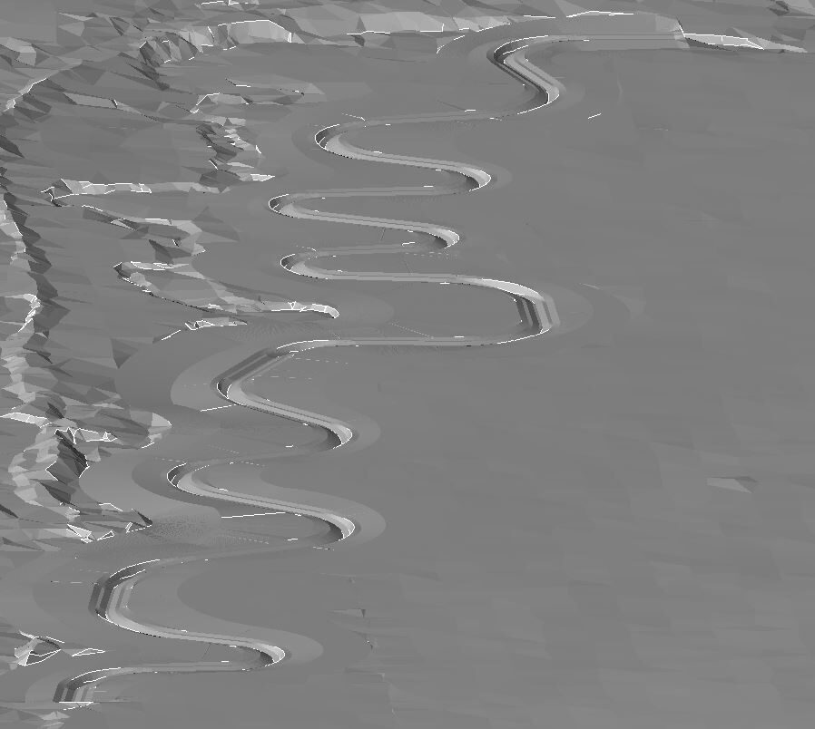

Services

River / Stream Assessment Opinions and Planning
TWR, working with real estate professionals and other property acquisition members, can provide water resource opinions such as potential erosion hazards or property previously not managed for fish or wildlife. Assessments are both documented in a report and provided interactively on a smart phone via ArcGIS, Survey123 and Field Maps.
River / Stream / Wetland Restoration Design
TWR often starts your project with a conceptual plan, followed by more detailed, 3D design plans and construction cost estimates. State LIDAR data is used to streamline the process. 3D designs can be exported directly into machine-assisted, GPS-enabled, heavy equipment, or taken to construction via stakeout points.
Environmental Permitting
TWR has extensive experience putting together permit applications to the state DEQ, county, and US Army Corps of Engineers. The Stream Quantification Tool is sometimes applied, as needed.
Construction Oversight
TWR has extensive experience overseeing construction and recommends this important task for better efficiency and quality control of the construction process. Construction almost never goes as planned; oversight reduces and/or eliminates construction change orders.
Ecological Services
TWR and collaborators can provide multiple ecological services, from fisheries biomass, electro-shocking and benthic macro-invertebrate studies to threatened and endangered species surveys, as warranted.
Monitoring: Drone Aerials, Fluvial Geomorphic / Photographic
TWR provides an efficient, repeatable monitoring process that allows you to track your project over 5 to 10 years, as needed.
Floodplain Assessment
TWR can assist you with figuring out where the FEMA mapped floodplain is in relationship to your property. TWR collaborates with an engineering firm to assist with floodplain map revisions or changes, if warranted.
State and Federal Jurisdictional Delineations
TWR will map out your ordinary high water mark and conduct a preliminary jurisdictional determination typically required for stream restoration projects.
Irrigation Diversion Design / Assessment
TWR can assess your property's water conveyance and irrigation efficiency by evaluating existing infrastructure, especially in relation to a potential stream restoration project. Canals sometimes benefit from lining and/or newly designed and implemented diversion structures.
Project Management and Consulting
TWR can provide project management and consulting related to stream and river restoration design and/or construction sites for clients in need of better efficiency, facilitation, permitting compliance/quality control, and better transparency of construction cost.
